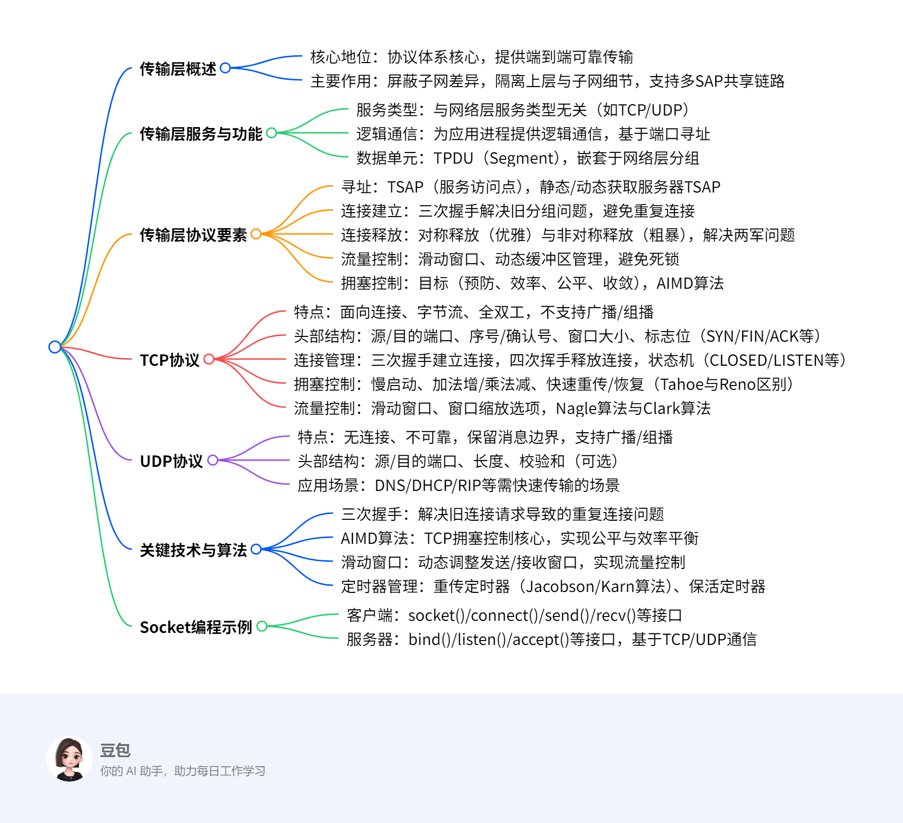
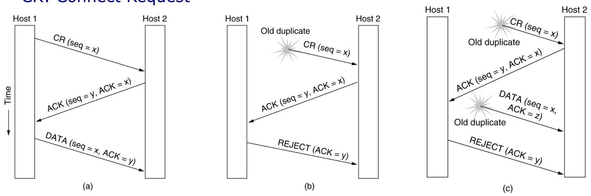
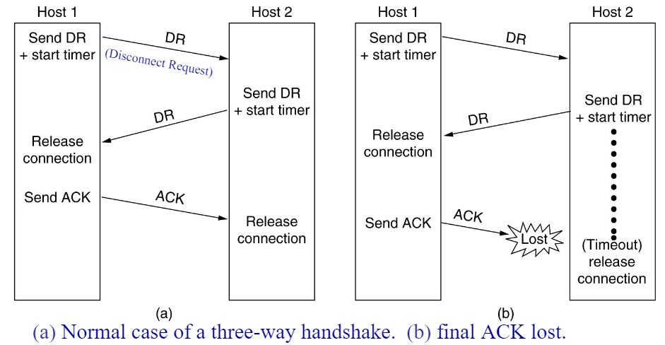
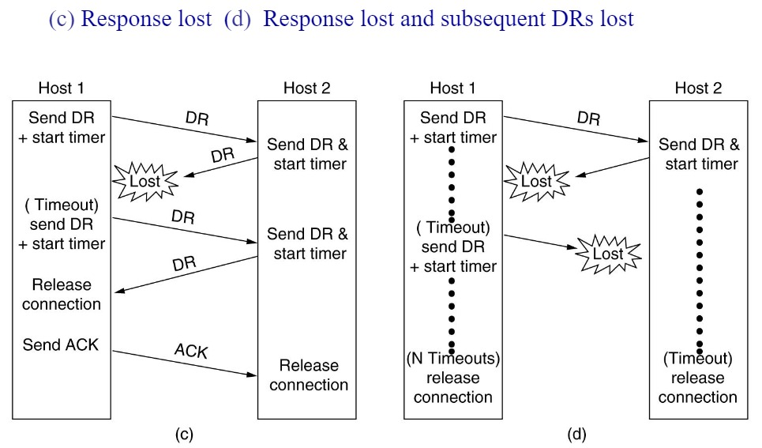

The Transport Layer¶
总览¶
一段话总结¶
文档围绕传输层展开，传输层是协议体系的核心，提供端到端可靠数据传输，屏蔽通信子网差异，隔离上层与子网技术细节，支持多服务访问点共享网络链路。介绍了传输层服务、协议要素（寻址、连接建立与释放、流量控制等）、拥塞控制（如AIMD算法、TCP的慢启动、快速重传等机制），以及互联网传输协议TCP和UDP的特点、头部结构、应用场景等，还包含Socket编程示例和多个思考题。
思维导图¶
¶
详细总结¶
一、传输层核心功能与地位¶
- 核心作用：传输层是协议体系的核心，提供端到端（ETE）可靠数据传输，屏蔽通信子网的多样性，为上层提供统一接口，隔离上层与子网的技术细节（如链路差异、丢包等）。
- 逻辑通信：通过端口（Port）为应用进程提供逻辑通信，端口号范围0-65535，区分同一主机的不同进程。
- 服务类型：支持面向连接（如TCP）和无连接（如UDP）服务，与网络层服务类型无关（如网络层虚电路/数据报不影响传输层选择）。
二、传输层协议关键要素¶
- 寻址与端口
- TSAP（服务访问点）：传输层通过TSAP（即端口）标识应用进程，如HTTP默认端口80，FTP默认端口21。
- 获取TSAP方式：静态分配（如知名端口）、动态查询（通过域名服务器）、进程服务器（如inetd管理非活跃服务端口）。
- 连接建立与释放
- 三次握手：解决旧分组导致的重复连接问题。例如，若两次握手可能因旧连接请求延迟到达导致错误连接（如主机A重复发送旧SYN，主机B确认后建立无效连接）。
- 对称释放（四次挥手）：确保数据完整传输，避免“两军问题”（需双向确认释放）。
- 流量控制与缓冲
- 滑动窗口协议：发送方根据接收方窗口大小调整发送速率，如TCP通过
Window Size字段动态控制。 - 动态缓冲管理：接收方通过ACK携带缓冲分配信息（如
buf字段），避免发送方盲目发送导致缓冲区溢出。 - 拥塞控制
- 目标：预防拥塞、提高带宽利用率（效率）、公平分配带宽、快速适应流量变化（收敛）。
- AIMD算法：TCP核心算法，加法增（每次RTT增加1个MSS）、乘法减（拥塞时窗口减半），实现窗口“锯齿形”调整。
三、TCP协议详解¶
- 协议特点
- 面向连接：三次握手建立连接，四次挥手释放连接。
- 字节流：无消息边界，数据按字节流传输（如4个512字节分段可合并为一个读操作）。
- 全双工：双向独立数据流，支持同时发送和接收。
-
头部结构（20-60字节） | 字段 | 功能描述 | |---------------|--------------------------------------------------------------------------| | 源/目的端口 | 标识发送/接收进程，16位，如HTTP端口80 | | 序号/确认号 | 字节流编号（32位），确认号表示期望接收的下一字节序号 | | 标志位 | SYN（建立连接）、FIN（释放连接）、ACK（确认有效）、PSH（推数据）等 | | 窗口大小 | 接收方可用缓冲区大小（16位，通过窗口缩放选项可扩展至65535×2^n字节） | | 校验和 | 校验头部、数据及伪头部，确保传输正确性 |
-
拥塞控制机制
- 慢启动：初始窗口为1-4个分段，每收到一个ACK窗口加倍（指数增长），直至达到阈值后切换为加法增。
- 快速重传/恢复：收到3个重复ACK时，立即重传丢失分组，避免超时等待，窗口调整为阈值的一半并进入快速恢复。
- Tahoe vs Reno：Tahoe在丢包后进入慢启动，Reno支持快速恢复，减少带宽浪费。
- 流量控制优化
- Nagle算法：合并小分组（如Telnet的1字节数据），减少头部开销，但可能引入延迟。
- Clark算法：接收方避免发送小窗口更新（如小于MSS或缓冲区半满），防止“糊涂窗口综合征”。
四、UDP协议详解¶
- 协议特点
- 无连接：无需建立连接，直接发送数据报，延迟低。
- 不可靠：不保证交付、不重传、无流量控制，依赖应用层处理错误。
- 消息边界保留：发送方写操作与接收方读操作一一对应。
-
头部结构（8字节） | 字段 | 功能描述 | |---------------|--------------------------------------| | 源/目的端口 | 标识进程，16位 | | 长度 | 数据报总长度（包括头部），16位 | | 校验和 | 可选，校验数据报正确性（含伪头部） |
-
应用场景：适用于实时性要求高、允许少量丢包的场景，如DNS（53端口）、DHCP、RTP（实时传输协议）。
五、Socket编程与关键示例¶
- 核心接口：
socket()（创建套接字）、bind()（绑定地址）、connect()（客户端连接）、listen()/accept()（服务器监听/接受连接）、send()/recv()（收发数据）、close()（关闭连接）。 - TCP示例：客户端通过
connect()发起连接，服务器通过accept()阻塞等待连接，基于字节流传输文件（如示例中传输"abc.txt"）。 - UDP示例：无连接，直接通过
sendto()/recvfrom()收发数据报。
关键问题¶
问题1：三次握手的核心作用是什么？为什么两次握手无法解决旧分组问题？¶
- 答案：三次握手的核心作用是防止旧连接请求分组导致的重复连接。若采用两次握手，当旧分组（如主机A首次发送的SYN因延迟滞留网络）到达主机B时，主机B会误认为是新请求并返回SYN+ACK，此时主机A可能已无建立连接的意愿，导致无效连接占用资源。而三次握手要求主机A必须对主机B的SYN+ACK进行最终确认，确保双方均同意建立连接，避免旧分组引发的错误。
问题2：TCP如何实现拥塞控制？AIMD算法的具体含义是什么？¶
- 答案：TCP通过慢启动、加法增（AI）、乘法减（MD）、快速重传/恢复等机制实现拥塞控制。
- AIMD算法：
- 加法增：每经过一个RTT（往返时间），拥塞窗口（cwnd）增加1个MSS（最大分段大小），线性增长以逐步探测网络容量。
- 乘法减：当检测到拥塞（如丢包）时，将cwnd减半（即乘以0.5），快速降低发送速率以缓解拥塞。
该算法通过“锯齿形”窗口调整，在公平性与效率间取得平衡。
问题3：UDP与TCP的本质区别有哪些？各自适用于什么场景？¶
- 答案：
- 本质区别：
- 连接性：UDP无连接，TCP面向连接（需三次握手/四次挥手）。
- 可靠性：UDP不保证交付，TCP通过重传、流量控制等实现可靠传输。
- 数据单位：UDP保留消息边界（按数据报传输），TCP为字节流（无边界）。
- 头部开销：UDP头部8字节，TCP头部20-60字节（含可选字段）。
- 适用场景：
- UDP：实时性要求高、允许丢包的场景，如视频直播、DNS查询、DHCP配置。
- TCP：可靠性优先的场景，如文件传输（FTP）、网页浏览（HTTP）、电子邮件（SMTP/POP3）。
6.1 The Transport Service¶
传输层的核心地位与功能¶
- 核心地位：传输层是整个协议体系的核心（the heart of the protocol hierarchy）。
- 核心功能：
- 端到端可靠传输：提供端到端（ETE）的可靠数据传输，确保数据从源到目的的完整交付。
- 屏蔽子网差异：隐藏通信子网的多样性（如不同链路技术、拓扑结构），为上层提供统一接口。
- 隔离上层与子网细节：使上层（如应用层）无需关注子网的技术、设计缺陷或不完美（如丢包、延迟）。
- 多服务访问点（SAP）共享链路：支持多个应用进程通过不同端口（Port）共享同一网络链路，实现复用。
传输层的逻辑通信与作用范围¶
- 逻辑通信：通过端口（Port）为应用进程提供逻辑通信，而非直接基于物理地址。例如，主机A与主机B的应用进程（AP1、AP2等）通过传输层端口建立连接，屏蔽底层网络设备（如路由器、LAN/WAN）的细节。
- 与网络层的区别：
- 网络层（IP）：作用于主机间（通过路由器转发），处理IP分组的路由与寻址。
- 传输层（TCP/UDP）：作用于应用进程间，基于端口实现端到端的直接通信（如TCP/UDP的作用范围覆盖整个端到端路径，而非局限于单个子网）。
传输层服务类型与网络层的独立性¶
- 服务类型：
- 网络层：分为面向连接（虚电路）和无连接（数据报）服务。
- 传输层：同样分为面向连接（如TCP）和无连接（如UDP）服务，但传输层服务类型与网络层无关。例如，TCP可运行在无连接的IP网络上，通过自身机制实现可靠性。
- 存在必要性：
- 网络层仅提供“尽力而为”的主机间通信，无法满足应用层对可靠性、流量控制、多进程复用等需求。
- 传输层通过端到端控制（如重传、窗口机制）弥补网络层缺陷，为应用提供更可靠的抽象。
数据单元与封装关系¶
- 传输层数据单元：称为传输协议数据单元（TPDU），也称为分段（Segment）。
- 封装层次：
- 分段（TPDU）被封装在网络层分组（Packet，如IP数据报） 中，分组再被封装在数据链路层帧（Frame） 中。
- 示例：TCP分段包含头部（源/目的端口、序号等）和数据载荷，封装为IP数据报后在网络中传输。
Berkeley Socket编程示例¶
- Socket接口作用：提供应用层与传输层的编程接口，实现进程间通信。
- 客户端代码逻辑：
- 创建Socket：
socket(PF_INET, SOCK_STREAM, IPPROTO_TCP)创建TCP套接字（面向连接）。 - 指定服务器地址：通过
struct sockaddr_in结构体设置服务器IP（如192.168.0.176）和端口（如12345）。 - 建立连接：
connect()发起三次握手，与服务器建立连接。 - 数据传输：通过
write()发送文件名（如"abc.txt"），通过循环read()接收文件数据并写入标准输出。 - 关闭连接：
close(sock)释放资源。 - 服务器代码逻辑：
- 创建Socket：同样使用TCP套接字。
- 绑定地址：
bind()将套接字绑定到本地任意IP（INADDR_ANY）和端口12345。 - 监听连接：
listen(5)开始监听，允许最多5个连接排队。 - 接受连接：
accept()阻塞等待客户端连接，返回新套接字data_sock用于数据传输。 - 文件传输：读取客户端发送的文件名，打开文件并通过循环
write()发送数据至客户端。 - 关闭连接：依次关闭文件和连接套接字。
总结¶
本节从功能定位、通信模型、服务独立性、数据封装、编程实现五个维度阐述了传输层的核心概念。重点强调传输层通过端口抽象和端到端控制，解决了网络层无法满足的应用需求，而Socket编程示例则展示了传输层服务的实际落地方式。
6.1 传输层服务¶
传输层的核心地位与功能¶
传输层是整个协议体系的核心，其核心作用包括：
1. 端到端可靠数据传输：提供进程间端到端（ETE）的可靠数据传输服务，确保数据准确到达。
2. 屏蔽子网差异：隐藏通信子网的多样性（如不同链路技术、拓扑结构），为上层应用提供统一接口。
3. 隔离上层与子网：使上层无需关注子网的技术细节（如链路类型、路由算法）和缺陷（如丢包、延迟），即隔离上层与子网的技术、设计及不完美性。
4. 支持多服务访问点（SAP）：通过端口（Port）区分不同应用进程，实现多个SAP共享同一网络链路（如同一主机上的HTTP和FTP服务）。
传输层的逻辑通信与协议作用范围¶
- 通信对象：实现应用进程间的逻辑通信，而非主机间直接通信。
- 与网络层的区别：
- 网络层（IP协议）：作用范围为“主机-路由器-主机”，实现主机间通信。
- 传输层（TCP/UDP协议）：作用范围为端到端（End-to-End），直接关联两端应用进程，不依赖中间路由器。
- 服务类型独立性：传输层服务类型（如TCP面向连接、UDP无连接）与网络层（如虚电路/数据报）无关。例如，TCP可运行在无连接的IP网络上。
数据单元与封装结构¶
- 传输层数据单元：称为段（Segment），即传输协议数据单元（TPDU）。
- 封装关系：
- 段（Segment）被封装进网络层的数据包（Packet），数据包再被封装进数据链路层的帧（Frame），形成“帧头+包头+段头+数据”的嵌套结构。
Berkeley Socket编程模型¶
核心接口功能¶
| 函数 | 功能 |
|---|---|
socket() |
创建通信端点，指定协议族（如PF_INET）、套接字类型（如SOCK_STREAM表示TCP）和协议（如IPPROTO_TCP）。 |
bind() |
将本地地址（IP+端口）绑定到套接字，用于服务端标识自身监听的地址和端口。 |
connect() |
客户端主动发起连接请求（仅面向连接协议如TCP需要）。 |
listen() |
服务端开始监听连接请求，设置最大连接队列长度（如listen(sock, 5)表示最多缓存5个连接请求）。 |
accept() |
服务端接受客户端连接请求，返回新套接字用于与客户端进行数据通信。 |
示例代码解析¶
- 客户端流程：
- 创建TCP套接字，指定服务端IP（192.168.0.176）和端口（12345）。
- 调用
connect()建立连接，发送文件名“abc.txt”，通过循环read()接收文件数据并写入标准输出。 - 服务端流程：
- 绑定本地任意IP（
INADDR_ANY）和端口12345，开始监听连接。 - 接受连接后，读取客户端请求的文件名，打开文件并通过循环
write()逐块发送数据到客户端。
关键问题：为何需要传输层？¶
- 网络层的局限性：仅提供主机间“尽力而为”的通信，无法实现进程级编址、可靠性传输、流量控制、拥塞控制等应用层需求。
- 传输层的必要性：填补网络层空白，为应用提供端到端的可靠通信服务，确保数据正确、有序、高效传输，是协议体系中实现进程间通信的关键层。
总结¶
本节围绕传输层的核心地位、功能、与网络层的差异及Socket编程实现展开，强调传输层通过端口机制实现进程间逻辑通信，通过统一接口屏蔽子网复杂性，并通过具体代码示例展示了客户端与服务端的通信流程。核心结论：传输层是连接应用层与网络层的桥梁，其端到端的可靠服务是上层应用正常运行的基础。
6.2 传输层协议的要素¶
传输层协议与数据链路层协议的共性与差异
共性
传输层协议与数据链路层协议均需处理 错误控制（确保数据正确传输）、顺序控制（保证数据有序到达）、流量控制（协调收发双方速率）。
差异场景
1. 编址范围
- 数据链路层：处理相邻节点间的直接通信编址（如MAC地址），仅关注链路两端设备。
- 传输层：处理端到端的进程级编址，通过端口号（TSAP，服务访问点） 标识目标应用进程，并依赖网络层IP地址（NSAP）定位目标主机。
- 连接建立机制
- 数据链路层：通常基于物理链路特性简化建立（如PPP协议的两次握手），假设链路环境稳定。
-
传输层：需应对复杂网络环境（如延迟、重复包），采用三次握手等可靠机制（如TCP），确保连接初始化的准确性。
-
资源管理复杂度
- 数据链路层：仅管理单一链路的缓冲区和带宽，资源竞争较少。
- 传输层：需协调跨多个子网的动态资源（如路由器缓存、多连接共享带宽），处理大量并发连接的资源竞争（如带宽波动导致的拥塞）。
传输层协议的核心要素
1. 编址（Addressing）
- 目标：唯一标识端到端的应用进程，实现进程级通信寻址。
- 关键概念：
- TSAP（服务访问点）：由主机IP地址+端口号组成，用于定位具体应用进程（如80端口对应HTTP服务）。
- NSAP（网络层服务访问点）：即主机IP地址，用于定位目标主机。
- 编址方式：
- 静态分配：知名端口（如21端口用于FTP、80端口用于HTTP），固定映射标准服务。
- 动态分配：通过目录服务（如DNS）或进程服务器（如inetd）动态获取服务端TSAP，适用于非标准服务。
2. 连接建立（Connection Establishment）
- 核心挑战：解决网络中延迟的重复包（如旧连接的SYN段）导致的错误初始化问题。
- 解决方案：
- 三次握手机制：
1. 客户端发送SYN段（含初始序号x），请求建立连接；
2. 服务端回复SYN+ACK段（含序号y，确认序号x+1），确认请求并同步自身序号；
3. 客户端回复ACK段（确认序号y+1），完成连接建立。
- 初始序号（ISN）随机化：每次连接生成不同的初始序号，避免新旧连接的序号冲突。
3. 连接释放（Connection Release）
- 两种模式：
- 非对称释放：单方主动断开连接（如调用close()），可能导致未接收数据丢失，属于“暴力”释放。
- 对称释放：双方独立释放单向连接（如TCP的四次挥手），确保双向数据传输完成后再断开，属于“优雅”释放。
- 典型问题：
- 两军问题：释放连接时需确认双方均完成数据传输，避免因ACK丢失导致残留连接，通过超时重传机制解决。
- 半开连接：若一方异常断开（如主机崩溃），另一方通过保活定时器（Keepalive Timer） 检测并终止无效连接。
4. 流量控制与缓冲管理（Flow Control and Buffering）
- 目标：避免发送方速率超过接收方处理能力或网络拥塞，保障传输效率。
- 关键机制：
- 滑动窗口协议：接收方通过窗口大小字段通知发送方允许发送的数据量（如TCP的Window Size字段），动态调整传输速率。
- 动态缓冲分配：
- 发送方缓存未确认数据，用于重传；
- 接收方根据剩余缓冲区大小动态调整窗口（如TCP的窗口扩展选项）。
- 流量控制 vs. 拥塞控制：
- 流量控制：解决端到端的速率匹配问题（接收方→发送方）；
- 拥塞控制：解决网络全局的资源竞争问题（网络层→传输层）。
总结
本节对比了传输层与数据链路层在协议设计上的核心差异，重点阐述传输层的四大要素：编址（区分进程）、连接建立（应对网络延迟）、连接释放（确保数据完整）、流量控制（协调收发速率）。其中，三次握手和滑动窗口是传输层协议（如TCP）的核心机制，通过解决网络环境的复杂性，确保端到端通信的可靠性与效率。
Addressing¶
关键概念¶
- TSAP（服务访问点） 和 NSAP（网络层服务访问点）：TSAP 用于标识传输层的应用进程，NSAP 通常指主机 IP 地址用于定位目标主机 ，两者与传输连接相关。
获取服务器TSAP的方式¶
- 静态方式：知名TSAP（Well - known TSAP） ，是固定指定给某服务的TSAP ，如常见网络服务（如HTTP、FTP等）对应固定端口号 ，这种方式为静态分配。
- 动态方式：通过查找名称服务器（name server） 或目录服务器（directory server） ，根据服务名来确定TSAP ，此为动态分配方式。
进程服务器（Process Server）¶
- 当存在许多服务器进程，且其中大部分很少被使用时，让每个进程都处于活跃状态是资源浪费行为 。例如inetd（Internet daemon） ，它作为进程服务器，可按需激活相应服务器进程，避免资源浪费。
Connection Establishment¶
问题（Problem）¶
建立连接看似简单，即发送连接请求传输协议数据单元（CONNECTION REQUEST TPDU） 至目标端并等待连接确认（CONNECTION CONFIRM） 回复。但实际存在问题，网络可能出现数据包丢失、存储和重复 的情况。
解决方案（Solution）¶
- 使用一次性传输地址：降低旧连接相关地址引发问题的风险。
- 设置等待时间：要求传输实体在恢复后闲置T秒（T = 120s） ，使旧的段（segments）失效，避免其干扰新连接。
- 初始序号随机化：每个连接使用不同的初始序号（ISN） 开始对段进行编号，防止新旧连接序号混淆。
三次握手（The Three - way Handshake）¶
介绍了使用三次握手建立连接的三种协议场景： - 正常操作（Normal operation）：连接建立按标准三次握手流程顺利进行。 - 旧的连接请求意外出现（Old CONNECTION REQUEST appearing out of nowhere）：处理旧连接请求干扰新连接建立的情况。 - 重复的连接请求和重复的确认（Duplicate CONNECTION REQUEST and duplicate ACK ）：解决因重复请求和确认带来的连接建立问题。  这组图展示了主机1（Host 1）和主机2（Host 2）之间建立连接的三种场景，涉及连接请求（CR）、确认（ACK）、数据传输（DATA）和拒绝（REJECT）等过程，时间轴方向为从上到下。
（a）正常操作（Normal operation）
1. 连接请求：Host 1 向 Host 2 发送连接请求 CR (seq = x) ，其中 seq = x 表示序号为x 。
2. 连接确认：Host 2 收到请求后，回复 ACK (seq = y, ACK = x) ，seq = y 是Host 2 的序号，ACK = x 表示确认收到Host 1 序号为x的请求 。
3. 数据传输：Host 1 再发送 DATA (seq = x, ACK = y) ，开始传输数据，序号为x并确认收到Host 2 序号为y的确认 。此为正常的三次握手建立连接并进行数据传输流程。
（b）旧的连接请求意外出现（Old CONNECTION REQUEST appearing out of nowhere）
1. 旧连接请求干扰：一个旧的重复连接请求 Old duplicate CR (seq = x) 从Host 1 发向Host 2 。
2. 错误确认：Host 2 未识别出是旧请求，回复 ACK (seq = y, ACK = x) 。
3. 拒绝请求：Host 1 发现这是错误的确认，发送 REJECT (ACK = y) 拒绝该连接 ，避免建立错误连接。
（c）重复的连接请求和重复的确认（Duplicate CONNECTION REQUEST and duplicate ACK ）
1. 旧连接请求干扰：一个旧的重复连接请求 Old duplicate CR (seq = x) 从Host 1 发向Host 2 。
2. 错误确认：Host 2 回复 ACK (seq = y, ACK = x) 。
3. 旧数据干扰：又一个旧的重复数据 Old duplicate DATA (seq = x, ACK = z) 从Host 1 发向Host 2 。
4. 拒绝请求：Host 2 发送 REJECT (ACK = y) 拒绝，防止错误连接和数据传输 。
这组图主要说明在网络连接建立过程中，旧的重复数据包可能导致连接错误，通过相应的确认和拒绝机制来保证连接建立的正确性 。
Connection Release¶
两种释放方式¶
- 非对称释放（Asymmetric Release） ：也称为“暴力”释放。当一方挂断时，连接即断开 。这种方式较为突然，可能导致数据丢失 。
- 对称释放（Symmetric Release） ：又称“优雅”释放。将连接视为两个独立的单向连接 ，要求分别对每个单向连接进行释放 。
两军问题（The Two - army Problem）¶
 这两张图展示了主机1（Host 1）和主机2（Host 2）之间通过三次握手释放连接的两种场景 ，涉及断开请求（DR, Disconnect Request）、确认（ACK）等过程，时间轴方向隐含为从上到下。
（a）正常情况（Normal case of a three - way handshake）
1. 发起断开请求：Host 1 发送断开请求 DR ，并启动定时器（Send DR + start timer） 。
2. 响应断开请求：Host 2 收到 DR 后，也发送断开请求并启动定时器（Send DR + start timer） 。
3. 释放连接：Host 1 收到Host 2 的 DR 后，释放连接（Release connection） 。
4. 发送确认：Host 1 发送确认 ACK 给Host 2 。
5. 完成释放：Host 2 收到 ACK 后，释放连接（Release connection） ，完成正常的三次握手连接释放过程。
（b）最终ACK丢失情况（final ACK lost）
1. 发起断开请求：与（a）类似，Host 1 发送断开请求 DR ，并启动定时器（Send DR + start timer） 。
2. 响应断开请求：Host 2 收到 DR 后，发送断开请求并启动定时器（Send DR + start timer） 。
3. 释放连接：Host 1 收到Host 2 的 DR 后，释放连接（Release connection） 。
4. 确认丢失：Host 1 发送的确认 ACK 在传输过程中丢失（Lost） 。
5. 超时释放：Host 2 未收到 ACK ，在定时器超时（Timeout）后，释放连接（release connection） 。
这组图主要说明在连接释放的三次握手过程中，正常情况下连接可顺利释放，而当最终的确认 ACK 丢失时，接收方会在超时后释放连接 。

这两张图展示了主机1（Host 1）和主机2（Host 2）在连接释放过程中，因响应和后续断开请求（DR, Disconnect Request）丢失而出现的不同情况 ，涉及断开请求（DR）、确认（ACK）等过程，时间轴方向隐含为从上到下。
（c）响应丢失（Response lost）
1. 发起断开请求：Host 1 发送断开请求 DR ，并启动定时器（Send DR + start timer） 。
2. 响应丢失：Host 2 发出的响应 DR 丢失（Lost） 。
3. 超时重发：Host 1 定时器超时（(Timeout) send DR + start timer），重新发送 DR 。
4. 再次响应：Host 2 收到重发的 DR 后，发送 DR 并启动定时器（Send DR & start timer） 。
5. 释放连接：Host 1 收到Host 2 的 DR 后，释放连接（Release connection） 。
6. 发送确认：Host 1 发送 ACK 给Host 2 。
7. 完成释放：Host 2 收到 ACK 后，释放连接（Release connection） 。
（d）响应丢失且后续DR丢失（Response lost and subsequent DRs lost）
1. 发起断开请求：Host 1 发送断开请求 DR ，并启动定时器（Send DR + start timer） 。
2. 响应丢失：Host 2 发出的响应 DR 丢失（Lost） 。
3. 超时重发：Host 1 定时器超时（(Timeout) send DR + start timer），重新发送 DR ，但该 DR 也丢失（Lost） 。
4. 多次超时：Host 1 经历多次（N次）超时（(N Timeouts)） 。
5. 最终释放：Host 1 在多次超时后，释放连接（release connection） 。
6. Host 2 超时释放：Host 2 在自身定时器超时（(Timeout)）后，也释放连接（release connection） 。
这组图主要说明在连接释放的三次握手过程中，当响应和后续断开请求丢失时，双方如何通过超时机制来处理并最终释放连接 。
半开连接（Half - open Connection）¶
- 问题描述：若初始断开请求（DR）和N次重传都丢失，发送方会放弃并释放连接，而另一方对此毫不知情 。
- 解决方法：使用虚拟传输协议数据单元（Dummy TPDU） ，如保活（keepalive）、心跳（heartbeat ，默认7200秒）机制，防止对方断开连接 。
Error Control and Flow Control¶
错误控制（Error Control）¶
- 检测手段：采用错误检测码，如CRC或校验和，用于检测数据传输过程中是否出现错误。
- 重传机制：运用自动重传请求（ARQ） 。
- 停等协议（Stop - and - wait） ：发送方发送一个数据帧后，需等待接收方的确认帧，收到确认后才发送下一个数据帧。
- 滑动窗口协议（sliding window protocol） ：允许发送方在未收到确认的情况下，连续发送多个数据帧，以此提升传输效率。
源缓冲与目的缓冲（Source Buffering & Destination Buffering）¶
- 缓冲策略：研究源缓冲和目的缓冲之间的最佳缓冲方式 。
- 发送方缓冲：用于缓存可能需要重传的数据 。
- 接收方缓冲：用于暂存接收到的数据。
- 机制分离：将缓冲管理与确认机制分离，即解耦缓冲与确认 ，增强传输灵活性。
- 动态管理：实现可变窗口大小的动态缓冲区管理 。
- 发送方和接收方需依据实际情况动态调整缓冲区分配 。
- 接收方通过反向流量将确认信息和缓冲区分配信息一起反馈（类似HDLC的RR/RNR机制实现流量控制 ）。
动态缓冲区分配（Dynamic buffer allocation）¶
涉及使用4位的序号/确认号（4-bit seq/ack） ，用于标识和管理数据帧的传输与确认。
动态滑动窗口大小（The Dynamical Sliding Window Size）¶
- 影响因素：
- 接收方缓冲区空间：通过显式窗口指示实现流量控制 ，接收方告知发送方当前可接收的数据量。
- 子网容量：发送方监测网络承载能力，进行拥塞控制 ，防止网络拥塞。
6.3 Congestion Control¶
Desirable Bandwidth Allocation¶
拥塞控制（Congestion Control）¶
责任归属¶
- 拥塞控制是网络层和传输层的共同责任 。因为拥塞发生在路由器处，所以由网络层进行检测 。而唯一有效的解决方式是传输层协议降低向网络发送数据包的速率 。在互联网中，传输层（如TCP）在拥塞控制方面起到关键作用 。
算法目标¶
- 避免拥塞（Prevention） ：提前采取措施防止网络拥塞的发生。
- 效率（Efficiency） ：合理分配带宽，充分利用所有可用带宽 。
- 公平性（Fairness） ：在相互竞争的传输实体间公平分配资源。
- 收敛性（Convergence） ：能够快速追踪流量变化 。
最大 - 最小公平性（Max - Min Fairness）¶
带宽分配问题¶
- 网络不会为每个流或连接进行严格的带宽预留，在IP路由器中，所有连接往往竞争相同的带宽 。
- 最大 - 最小公平性原则 ：在不减少其他不大于当前带宽分配流的带宽的情况下，一个流的带宽不能增加。
- 存在关于公平性衡量层面的问题，比如是基于主机 - 主机层面，还是基于传输层（L4）连接层面。
收敛性（Convergence）¶
- 目标是快速收敛到公平且高效的带宽分配状态 。由于网络的理想运行点会随时间变化，拥塞控制算法应能迅速收敛到理想运行点 ，并在其随时间变化时持续追踪 。